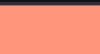
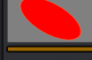
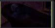
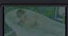
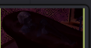
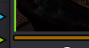
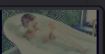

Field guide Setting up the nodes
The last guide covered what lives inside PhotoChemist: the sliders, the film science, designing your own stocks. This one is about the part everyone asked for next, how you actually wire it into a node tree and grade with it.
00 The mental model
In a normal digital grade you work backward from the display. PhotoChemist asks you to think forward through chemistry instead: the values coming in are a frozen impulse of light, and the node simulates what film would have done with it.
Work backward from the monitor.
Camera log lands as RGB triplets. An input transform brings every clip into one working space so lift, gamma, gain, curves, qualifiers and power windows all feel consistent. Then an output transform, a CST, OpenDRT or a print LUT, crushes it down to the display. You define the endpoint first and build back toward the shot.
Work forward through the chemistry.
Treat the incoming values as light hitting a camera negative. Expose the silver layers, develop the negative, push printer lights through the developed stock to expose a print, develop the print, then project it. Everything you do before the node is solving it on set. Everything inside is the lab.
The final image is a subtraction from the projector light you pick. A warm carbon arc bulb and a neutral xenon give you two different images from the same grade, because you are subtracting from a different quality of light. Choosing the bulb is as consequential as choosing your DRT, so choose it early.
Before you time a single frame, three fixed choices bracket the whole pipeline: your camera negative stock, your print stock, and the development controls (bleach bypass, developer push, and the rest). Pull them from the presets or design your own in the stock editor. Like the projector bulb, these set the in and out points that everything else is subtracted from, so lock them before you start grading.
Detailed guide · choosing and designing stocks→Workflow Mono-node
Conform the footage to linear, keep its original camera primaries, and a single PhotoChemist node runs the entire chain: expose, develop, print and project. This is the classical color-timing position. Your one grading control is printer lights: picture light passing through dichroic filters that split red, green and blue, each opening and closing like a valve. Lock your stocks, then grade in printer points.
Every lab stage, packed inside one node.
Workflow PL Injector
Same mono-node, but you would rather not open PhotoChemist every time. A PL Injector node, plus a power-window node beside it, generates a feed that PhotoChemist reads exactly as if you had moved the printer lights inside. Now your panel, qualifiers and power windows all drive real printer-light modulation: brighten the bathtub, place a skin tone, ride the gain, all still expressed as printer points.


You have not left color timing yet. You are still working printer lights to build the positive print, you have just given yourself a friendlier surface to do it on. Think of it as workflow 1A.
Workflow The Sandwich
Two matched PhotoChemist nodes wrap a normal grade. The first is set to Neg Scan. Film Negative Space converts that scan into a gradeable positive, a cineon log-ish image you can push with ordinary tools. You do your work in the middle. A second Film Negative Space flips digital back to negative, and the last node prints. The two conversion nodes are fully invertible no-ops, so the negative and print stocks stay committed while you grade the digital intermediate exactly where a colorist historically sat.



The negative was chosen on set, the print stock was chosen after. Your job is the part in between: grade the intermediate and get the best possible image, without ever reopening the stocks.
Workflow Digital to Print
Take your conformed DaVinci Wide Gamut linear image, invert and prep it with Film Negative Space so PhotoChemist accepts it, then run Print Only. Nothing happens on the negative side. You get print sensitivity, print dye and print H&D, plus printer lights and the projector bulb. It is the same idea as dropping a 2383 print LUT onto digital footage, except it is live and every control is yours.
The physical analog is a film-out: a digital master recorded to negative purely so it can be printed.
Workflow Neg to Digital
Keep the authentic negative and its grain, halation and layer crosstalk. The first node is set to Neg Scan. Film Negative Space inverts neg to digital into a cineon-log positive, you grade in the middle with normal Wide Gamut controls, then hand off to OpenDRT as your display transform. Shape the intermediate so it reads to OpenDRT like DaVinci Wide intermediate, and out you go. It is the mirror image of the print workflow: real film capture, modern digital finish. Swap OpenDRT for a 2383 print LUT any time and nothing about the approach changes.


The trick is matching the handoff. Shape the scan so its contrast sits where OpenDRT expects DaVinci Wide intermediate, roughly the bulk of the image between 20 and 60 on the scopes. Once the two talk to each other cleanly, commit the negative and the DRT, and grade in the middle.
In short The through-line
That is four and a half ways to honor a photochemical system that ran for a hundred years before any of this went digital. Use only the print side. Use only the negative side into OpenDRT. Put both together and grade the intermediate. Run a pure mono-node, or a mono-node driven by your own printer-light rig off to the side. Anything you do before PhotoChemist is answering one question: what if something had changed on set?